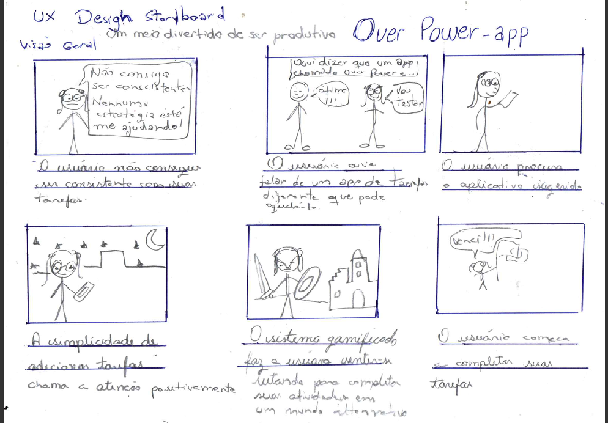
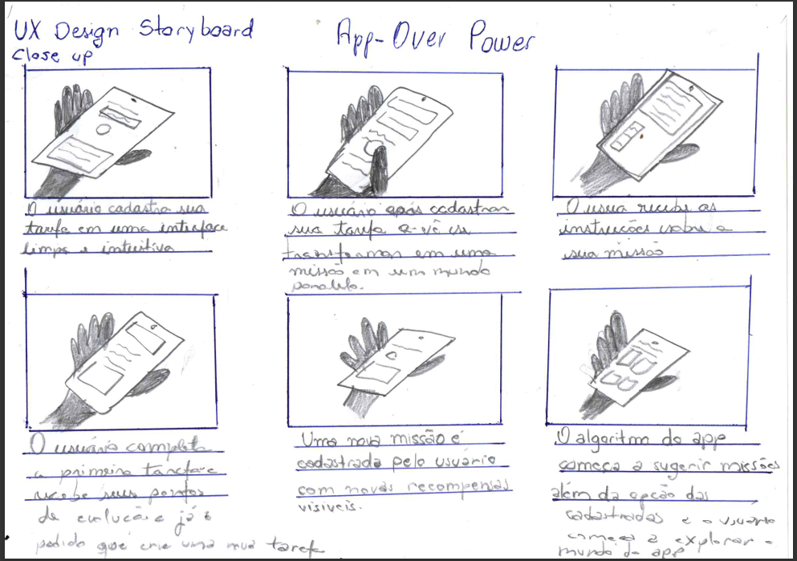
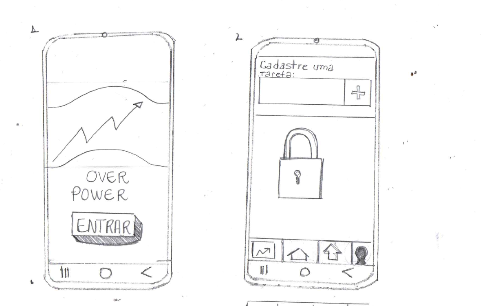
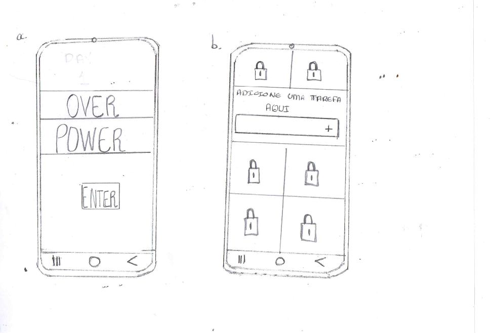
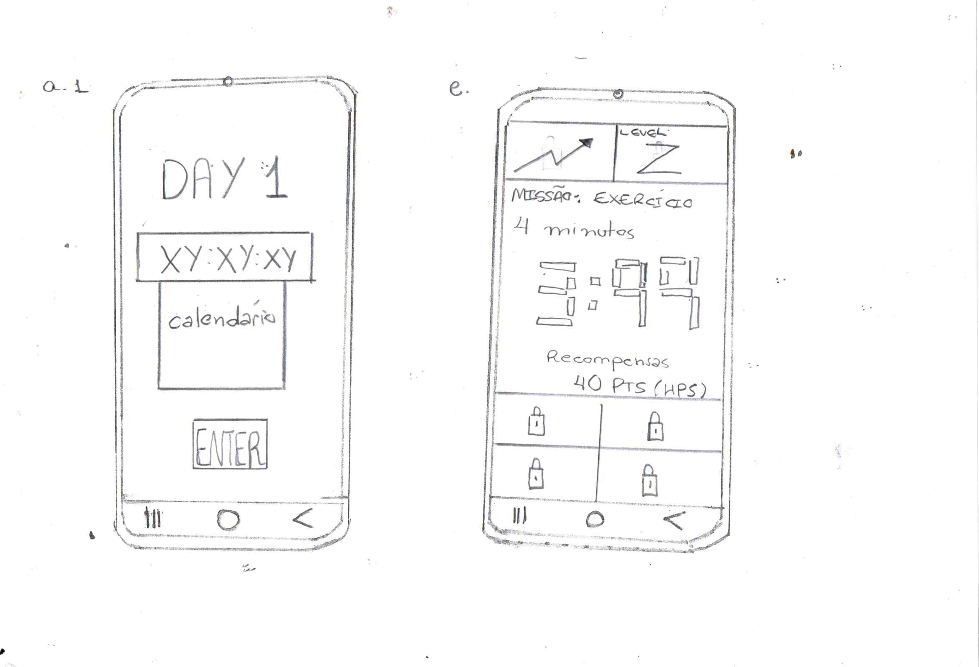

OVER POWER
O web aplicativo multiplataforma Over Power é um aplicativo de desenvolvimento pessoal com foco em atividades rotineiras gamificadas visando o progresso pessoal por meio da metodologia de micro-tarefas, com um fim de sua vida funcional útil pré-estabelecido. Sua inspiração é o sistema que auxilia o protagonista (Sung Jin-woo) do anime Solo Leving que ajuda o protagonista a se desenvolver, mesclada aos elementos da filosofia estoica ao positivismo e ao universo da fantasia isekai. No entanto, a base metodologica da lógica de desenvolvimento do aplicativo gamificado está fundamentada no livro Mini-Hábitos de Ethan Kael: Sendo assim, o universo do aplicativo explorará uma realidade paralela onde as atividades (tarefas) do usuário deverão ser convertidas em missões e desafios. O aplicativo tem como público alvo jovens de 15 à 35 anos, fã de animes e filmes de aventura...
Para este projeto, que ainda está em fase de prototipação. Já forma realizadas pesquisas de usuário, construção de personas, storyboards e mapas de empatia.




